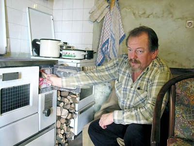

 Istrorumunjski je oduvijek bio jezik bez pisma, nema svoju literarnu tradiciju, ne postoje niti novine na istrorumunjskom. Ipak, opstao je punih pet stoljeća na području sjeverozapadne Istre kao govorni idiom zahvaljujući, prije svega, prometnoj izoliranosti i perifernom smještaju sela u kojima se još može pronaći njegovih govornika. Istrorumunji nisu priznati kao nacionalna manjina u Hrvatskoj, a govornici istrorumunjskoga, koji neki lingvisti doživljavaju kao dijalekt rumunjskoga, a neki pak kao zaseban jezik, ne posjeduju zaseban osjećaj nacionalnoga identiteta i uglavnom se određuju kao Hrvati ili Talijani.
Oni mene stalno zovu dole. Ja sam im reka - da imam dvadeset let, ša bi. I ne bi ša leto dan doma dok ne bi sve obaša.
- A imate li vi tamo koga?
- Prijatelje imam.
- Jeste li vi rumunjskoga podrijetla, ili netko iz vaše obitelji?
- Ne, ne, ne, nisam ja rumunjskoga podrijetla...
- Ali kakve onda veze imate s Istrorumunjima?
- To je samo - započinje i načas zastaje da uhvati dah prije opširnije priče Josip Glavina Pepo - naši preci su došli od tamo. A mi smo se uvijek pisali Hrvati. Jer naši stari nisu htjeli nikada, barem ovo koliko ja znam, pisati se Rumunji. A naši od nekada da jesu. Jer oni da su tu došli 1329. godine, i to iz Dalmacije. Istraživači stalno govore da su oni došli iz Vlaške nizine - u Bosnu, iz Bosne u Dalmatinsku zagoru i onda da su ih Frankopani naseljavali po Istri, jer je tu kuga poharala, puno ljudi je odnijela... Oni da su bili stočari, ovčari, pa su stalno išli s ovcama za ispašom, a tu je ova dolina, rječica, brda su okolo, sve je bilo idealno za njih, da se tu zaustave.
Glavina je svakako jedan od verziranijih mještana istarskoga sela Šušnjevica kada je riječ o Istrorumunjima – Vlasima, kako se sami često nazivaju, Ćićima ili Ćiribircima, etničkoj grupi nastanjenoj u sjeverozapadnoj Istri i područjima oko Ćepićkog polja. Istrorumunji nisu priznati kao nacionalna manjina u Hrvatskoj, a govornici istrorumunjskoga jezika, koji neki lingvisti doživljavaju kao dijalekt rumunjskoga, a neki pak kao zaseban jezik, ne posjeduju zaseban osjećaj nacionalnoga identiteta i uglavnom se određuju kao Hrvati ili Talijani. Istrorumunjski je oduvijek bio jezik bez pisma, nema svoju literarnu tradiciju, ne postoje niti novine na istrorumunjskom. Ipak, opstao je punih pet stoljeća na ovome području kao govorni idiom, zahvaljujući, prije svega - tako se uglavnom smatra - prometnoj izoliranosti i perifernom smještaju sela u kojima se još može pronaći njegovih govornika.
Poropat ili "bez kreveta"
S obzirom na to da je selo Šušnjevica poznato po činjenici da se ondje još uvijek zadržao istrorumunjski jezik, ono je interesantno "svratište" mnogim domaćim, a osobito inozemnim novinarima i TV kućama, ali i etnolozima, lingvistima i drugim proučavateljima ove privlačne, egzotične teme. Može se reći da je priča o Istrorumunjima na jedan način već apsolvirana - postoje znanstveni radovi o njima, prije nekoliko godina dr. Goran Filipi objavio je Istrorumunjski lingvistički atlas, a dr. August Kovačec Istrorumunjsko-hrvatski rječnik. S druge strane, tko god je dotaknuo temu takozvanih Istrorumunja shvatio je da se zatekao u jednom vrlo širokom i prostranom polju koje zapravo nije, i vrlo vjerojatno nikada neće biti, posve jasno definirano i koje je, kako je netko već primijetio, jedna vrst puzzli koje se još uvijek slažu, dodaju, preslaguju. Možda je upravo u tome traganju za komadićima priče i u njihovom slaganju privlačnost ove teme.
- Ima rumunjskih prezimena ovdje u Šušnjevici. Recimo, Bartul je rumunjsko, kao i Faraguna, što na rumunjskom znači "bez kabanice". Prezime Poropat znači "bez kreveta". Licul je isto rumunjsko, kao i Katunarić. Neka mjesta i sela ovdje u okolici imaju rumunjska imena, primjerice Buzet, to vam na rumunjskom znači "usne," Katun znači "seoce," Gradinje znači "vrt," Kostrena je jedno rumunjsko ime... Moje prezime Glavina, to je dalmatinsko, nema veze s rumunjskim, priča Pepo.
- Vi znači nemate nikakav konkretan podatak vezan uz rumunjsko podrijetlo vaših predaka... Ali nešto vas je, unatoč tome, privuklo toj temi?, pitamo našeg susretljivog domaćina.
Političari obećali, pa nestali
- To je uvijek prelazilo s koljena na koljeno, i jezik i sve to. Nekada su postojali i običaji. Danas više nemamo te običaje, oni su se izgubili. Nekad je postojala i narodna nošnja. Ona je danas u muzeju u Beču. Mi točno ne znamo odakle je to došlo. Etnolozi i lingvisti se bave time, ali i oni jedni druge pobijaju. Rumunjski istraživači dolazili su ovamo još u 18. stoljeću. Uzimali su djecu sa sobom i vodili ih na školovanje u Rumunjsku. Moj prezimenjak Glavina je 1920. išao tamo u učiteljsku školu i kad ju je završio, došao je raditi u Šušnjevicu. Austro-Ugarska je priznala ta manjinska prava i neki su se tada pisali da su Rumunji. Svuda se po kućama govorilo vlaški, i kada sam ja bio mali. Mi i sada govorimo svi vlaški. Kada izađem na cestu onima koji govore hrvatski govorim na rumunjskom, a oni mi odgovore na hrvatskom, jer razumiju. Svi znaju, samo neće govoriti.
Župan Ivan Jakovčić bio je obećao da će nam dati sve što hoćemo. Najprije je obećao da će se tu raditi dom kulture gdje bi bio i muzej o tom jeziku. Evo, sada čujem da se neće praviti dom, jer Županija nema para, nego da će u jednoj prostoriji Mjesne zajednice napraviti arhivu - sve o nama. Jedna američka znanstvenica, čiji je nono iz Šušnjevice, jer puno se naših Istrorumunja raselilo po svijetu, često nam dolazi i ona s direktoricom Etnografskog muzeja iz Pazina Lidijom Nikočević radi da se tu napravi taj centar, a to podržava i Yale, taj fakultet iz Amerike. Ona je rekla da će doći ove godine razgovarati sa stanovnicima.
Ja sam joj rek'o da je to trebalo napraviti puno prije. Tu su 1971. dolazili rumunjski istraživači. E, onda nas je tu još bilo puno. Ali sada nas je sve manje. Nemamo ni gostione, nemamo se gdje naći... U kućama se govori hrvatski, ne govori se više rumunjski, to je gotovo. I oni bi sad nešto pokrenuli. Koliko će se tu moći - ne znam. Goran Filipi je rekao da će za trideset godina sve nestati. I Josip Matasović, profesor sa Sveučilišta u Zagrebu, rekao je da će za dvadeset, trideset godina sve nestati... Sada se nešto pokušava, da se uvede ovdje u školu, da uče djeca koja hoće, a naši odavde bili bi obvezni učiti. Općina Kršan bi to financirala, kaže Glavina.
Žejanci priznaju samo žejanski
Danas u Šušnjevici živi 77 ljudi, a vlaški, kako još zovu istrorumunjski, aktivno govori samo njih 20. Jedan od starih govornika je i barba Miro, koji kaže da istrorumunjski govori otkad zna za sebe, a da je hrvatski jezik učio dok je radio kao kovač, slušajući ljude koji su dolazili u kovačnicu i međusobno govorili hrvatski jezik.
Osim u Šušnjevici, s okolnim selima i zaseocima, gdje sveukupno živi 286 ljudi, a istrorumunjski aktivno govori njih 80, istrorumunjski ili vlaški jezik dio je tradicije i sela Žejane, s druge strane Učke, duboko u brdu na cesti koja od Matulja vodi prema slovenskoj granici.
- Ovi Žejanci neće priznati taj naš istrorumunjski, ili vlaški, kako ga mi zovemo, oni govore "Mi nismo to, to je naš, žejanski jezik". Mi smo ovdje uvijek govorili da je to vlaški jezik. Ja sam gled'o te dokumentarne filmove o Rumunjima iz Srbije, Bugarske. Oni govore isto kao i mi, taj jezik. Iz Makedonije isto kao i mi govore vlaški, samo što je kod nas dosta tih riječi ušlo u hrvatski, u talijanski, jer tu je bilo u prolazu svega, dodaje Pepo.
Rumunji pokazuju velik interes za Istrorumunje, odnosno govornike istrorumunjskoga jezika, o kojima su predstavnici rumunjskoga nacionalnog muzeja Astra snimili dokumentarni film, a objavljena je jedna knjiga s tom temom.
Mauro Doričić predsjednik je Žejanskih zvončara, poznate folklorne skupine iz sela Žejane. Kada se o temi Istrorumunja želi govoriti s nekima odavde, onda je najbolje obratiti se njemu. Međutim, ovdje su "prijam" i "obrada" ove teme ponešto drukčiji, na što je već upozorio Pepo iz Šušnjevice, koji je bio naš vođa puta do Žejana, sela prilično odvojenog od ostalih naselja, okruženog šumom i snijegom, do kojega vodi poluzaleđena cesta. Toga su jutra Žejane sa svojih -16 stupnjeva Celzija pretekle i po hladnoćama čuvenu Moskvu.
Svoj na svome, a ne na rumunjskome
- Ne shvaćamo se tako, suho je i pomalo rezervirano prema cijeloj temi i interesu za nju rekao Mauro te dodao: "Govorimo nekim romanskim dijalektom, tehnički je naziv bio istrorumunjski, s tim se baš ne slažemo. Nama još uvijek treba prevodilac kada govorimo s Rumunjima, ili ako su to Rumunji koji istražuju taj jezik ovdje već neko vrijeme, pa dosta dobro govore načinom na koji mi govorimo. Ali mi ne znamo točno podrijetlo toga jezika, a ne želimo se sad točno vezati za neki narod. Teško je reći da je to baš rumunjski jer mi koristimo dosta portugalskih i talijanskih riječi. Kada je tu u Žejanama, početkom 90-ih, bio rumunjski ambasador, s njim je bio i engleski prevodilac jer nismo mogli normalno komunicirati na rumunjskom."
Naš sugovornik priznaje vezu s romanskim jezicima, no vrlo se nevoljko osvrće na povezanost s rumunjskim jezikom. Moguće da je razlog u izraženoj hrvatskoj nacionalnoj svijesti i naglašenom katoličanstvu koji, prema bilježenju nekih proučavatelja, dominiraju na području ovoga sela još od vremena nakon Drugoga svjetskoga rata. No, u svakom slučaju mještani i pripadnici mjesne folklorne skupine ne odbijaju pozive u Rumunjsku, gdje su uglavnom pozvani predstaviti vlastitu folklornu tradiciju, i to kao pripadnici rumunjskoga naroda.
- To je drugo, dok god oni nas zovu da mi tamo dođemo pokazati naše običaje, mi protiv toga nemamo ništa, ali ako se to bude dalje nametalo…
- Kako mislite nametalo?
- Kada smo bili zadnji put u Rumunjskoj, onda su nam rekli da smo mi, kao, Rumunji, ali da to ne znamo. Onda se naš čovjek ustao i rekao da smo mi Hrvati i da ne bismo htjeli o tome razgovarati, da smo došli pokazati našu tradiciju, vidjeti njihovu i to je to. A, osim toga, naša narodna nošnja, kao što smo vidjeli na tim smotrama folklora, nije uopće slična njihovima, kaže Doričić.
Pitamo ga kako onda oni ovdje u Žejanama doživljavaju jezik koji su dobili u nasljeđe, i koji ipak govori još oko 200 govornika na ovome području - u samim Žejanama živi oko 130 ljudi, međutim, dosta nekadašnjih stanovnika i govornika otišlo je zbog posla u Rijeku, Opatiju...
- Smatramo taj jezik našim, ne zovemo ga čak niti vlaški, nego žejanski, odgovara Doričić.
Tečna konverzacija
Ističe, inzistirajući na svojevrsnom jezičnom čistunstvu, da se, kako kaže, žejanski jezik dosta razlikuje od jezika kojim se govori na području Šušnjevice i drugih sela Ćepićkoga polja. Ipak, ne možemo negirati da se nismo na vlastite uši osvjedočili, slušajući Pepea iz Šušnjevice, kako strastveno diskutira s jednim mještaninom Žejana na vlaškom, istrorumunjskom, žejanskom, ili već kako hoćete, kako njihova konverzacija, unatoč razlikama, teče kao podmazana.
U Žejanama također saznajemo da bi se tijekom ove godine trebao otvoriti jedan mali muzej, prostor u kojem bi se objedinili svi pisani, video i drugi materijali vezani uz taj (opasno ga je imenovati) jezik, i gdje bi bili izloženi i neki drugi materijali kao što su stari alati ili nošnja. Projekt je vodila spomenuta gospođa iz Amerike čiji su korijeni u Šušnjevici, mjestu s kojim će Žejanci, htjeli to priznati ili ne, ipak i na ovaj način morati biti povezani, jer to naprosto ne mogu izbjeći. Ako bolje pogledaju, vjerojatno će i sami shvatiti da je to posve prirodno s obzirom na cjelokupnu priču i jezik koji ih čine bliskima i iznimnima, što se u svakom slučaju treba doživjeti kao vrijednost više, a ne kao manjkavost.
Za završetak ove reportaže, uz dobre želje za pametno i sretno očuvanje tragova ovoga egzotičnoga i zanimljivoga jezika, koje bi, ako se u tome uspije, pomoglo u osmišljavanju sadržaja novoga života u ovim zabačenim i zaboravljenim sredinama, prenosimo riječi koje je izgovorio Šušnjevičanin Josip Grdina zvani Pepo na međunarodnom znanstvenom skupu o jezicima u doticaju, koji je prije nekoliko godina održan u Puli. Riječi je prenijela rumunjska televizija, a na istrorumunjskom zvuče otprilike ovako:
"Io pozdraveș toc n tota luma carľi cuvântu limba lu maie po vlåșchi!" (u prijevodu: Pozdravljam sve u svijetu koji govore jezik od majke po vlaški!)
Danas 100 govornika, u 18. stoljeću 6.000
U okolici Šušnjevice još je nekoliko sela u kojima se govori istrorumunjski jezik, ali je jako malo ljudi koji se danas aktivno njime koriste. Prema statistici koju je Glavina radio za rumunjsku televiziju, u svim je okolnim selima i zaseocima (Nova Vas, Jesenovik, Letaj, Kostrčan, Brdo, Zankovci) ostalo još stotinu ljudi koji govore taj jezik. Za usporedbu - istraživanje koje su na istome području vodili rumunjski etnolozi u 18. stoljeću bilježilo je 6.000 govornika istrorumunjskoga jezika. Kako je vidljivo i kako predskazuju stručnjaci koji se ovim fenomenom bave već godinama - istrorumunjski jezik jest jedan od jezika koji će za tridesetak godina potpuno nestati, kao da ga nikada nije niti bilo, stoga je uvršten na UNESCO-ov popis ugroženih jezika.
February 3, 2009
© 2009 Glas Istre